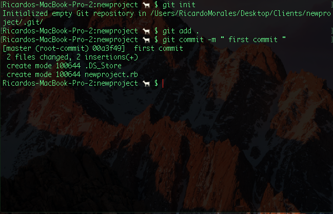

This lesson will be on the foundations of Github.
In this lesson you will learn the basics of Github, this will be essential to your career as a developer, you will push a lot of code to Github.
So, what is Github? In a nutshell Github is where all your code gets posted for the world to see.
The first thing you're going to do is go to https://github.com/ and sign up. This is the screen you should see or something similar.
Pick your usernmame and give them your email and new password.
After you sign in it should look like this, sign up for the free unlimited public repo's because you want everyone to see your work.

After that, you should be putting the same answers I have here
If not, skip it.
In this section, you can either click on "Read the guide" to learn Github the way they teach it or you can keep reading and follow along with how I teach it.
Once you've verified your email, you will have an empty Github account, and you should see this on-top of your Github.
Click on the + sign and click on new respository
As you can see in the Create a new respository page, you have your username than a backslash and "Respository name", in that box you will put the name of your project/job/whatever you're doing. Like this
After you're going to click Create repository on the bottom right hand side and you will see this
Explanation of the Github commands that you will be putting in your terminal.
git init | This tells Github that you are initializing a new respository. When you do it in your terminal it will look like this ( With the exception of the file name, of course.) In order to properly do this you have to mkdir a new folder and mkdir a new file and cd into the folder and git init.
git add README.md or git add . | This tells Github that you are adding either a read me file, making modifcations to a file, or creating a new file. The dot tells Github to add whatever changes were made. So this is what your terminal looks like when you add something to your repo.
As you can see, it seems nothing really happened but thats a good thing, Terminal will only tell you that something happened if something goes wrong. Other than that, the lack of responsiveness is a good thing.
git commit -m " first commit" | In Github, to commit means to give a brief description of what you're "pushing"(putting) on Github for the world to see! This is what you will see once you commit

You'll notice that two files were created although I only created one, that .DS_Store can be deleted as I show you here. Afterward, you can check by typing ls to see if it got deleted or not as I also show here.
git remote add origin git https://github.com/ricardomorales22/-newproject.git git push -u origin master | When in Terminal these two can be copied and pasted to the terminal to create your repo. git remote add origin git https://github.com/ricardomorales22/-newproject.git is telling the computer the place of origin(or location) of where your code is going to go. git push -u origin master is telling the computer to tell Github that this repo is getting pushed to the master branch ( The main stream of code) in your repo. This is what happens in your terminal when you do this. Github will ask you for your username and password in order to add the repo to your Github.
You've created your first repo on Github!
If you followed step by step this is what you should see!
Congratulations!
Next Blog Post
There is a way having to put your username and password everytime you push to Github and its with your SSH key, in my next Blog Post I will be talking about how to add your SSH key in order to over-ride having to put your username and password every time you push to Github. I will also be talking about why having your SSH key automatically signed up is good and why it isn't.